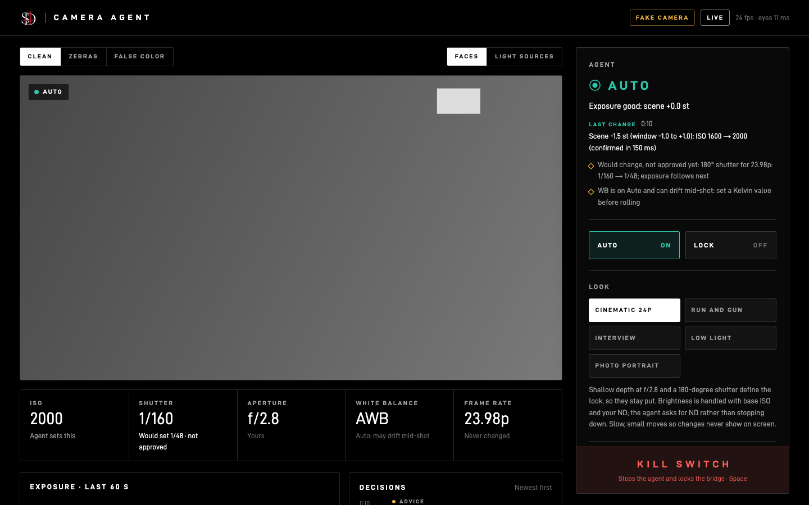

It sees.
It reads the FX2's live view over USB and measures it in stops from 18% grey: 48 regions, the brightest highlights, faces, and the color of the light. Small practicals like lamps don't count as clipping.
An AI camera assistant for the Sony FX2
It reads the FX2's S-Log3 picture, sets exposure for the look you choose, and explains every change in one line.
Every camera can meter. None of them can tell you why. Camera Agent watches the picture the way a cinematographer does: in stops, protecting the highlights, holding the face. Then it makes the change, and says why in one line.
01 · The picture
S-Log3 looks flat because it keeps every stop the sensor caught. That's why the agent reads it: it measures the image in stops from 18% grey, with the curve calibrated on this FX2.
02 · How it thinks
It reads the FX2's live view over USB and measures it in stops from 18% grey: 48 regions, the brightest highlights, faces, and the color of the light. Small practicals like lamps don't count as clipping.
You pick the look, and the look sets the rules: which f-stop, a 180° shutter, where a face should sit, how much clipping is fine, how fast to react. Exposure then moves a third of a stop at a time.
Every change goes through one safety function with the ranges you approved. Anything outside them is refused and logged. While the camera records, it changes nothing.
It makes the change, waits for the camera to confirm it, and writes one line about why. You can take control back at any moment with one key.
03 · The real test
The first unattended run on the real camera: a white wall, one lamp, the card out. Everything below is replayed from the agent's own logs, at real speed.
04 · Looks
Each look is a short set of rules a DP would give an assistant. The agent never trades the look for exposure. It reaches for ISO, ND advice, or a word on the dashboard first.
Card backgrounds are placeholder scenes05 · Safety
It's a working camera on real jobs, so the rules come first and they live in code: three separate layers, each with its own copy.
Real Counts from the bridge log of the Oct 19 live test. Ranges from config/safe_ranges.json.
06 · On set
The dashboard runs in a browser next to the camera: the picture with zebras or false color, the settings it may touch, each decision in plain words, and a kill switch that's always one key away.

07 · Proof
Six scenes, from a window-backlit face to a sunset. Each scene is filmed three ways: by the agent, by the FX2's own auto exposure, and by hand. Then people who don't know which is which rate them.
The plan was frozen before a single take, so the rules can't bend to the results. Graded with Sony's LC-709TypeA LUT, the same for every clip.
Estimates From the Step 8 plan; the Pi hasn't been bought or measured.